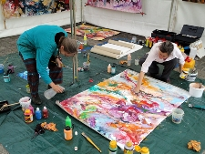

Activiteiten 2011
Goede doelen
Op het terrein zijn drie goede doelen aanwezig om zich aan het publiek te presenteren. Neem gerust een kijkje bij hun stand en ontdek wat zij te bieden hebben.
Vanaf het water
Bezoekers kunnen vanaf bootjes op de Dommel de concerten van dichterbij aanschouwen. Deze activiteit wordt mogelijk gemaakt door Waterschap De Dommel.
Neemt u ook eens een kijkje op de website van De Dommel natuurlijk schoon.
Dineren, picknicken en genieten van muziek
Tijdens Muziek op de Dommel kunt u de gehele dag en avond genieten van prachtige muziek. En dat hoeft u niet met een lege maag te doen! Museumrestaurant Flavours zorgt voor twee tappunten en biedt speciale dinerarrangementen aan in het restaurant.
Smalle Haven zal voor eetgelegenheid zorgen in een 'picknicksfeer'. De gerechten zijn vers, verrassend en creatief.
Expositie 'Brainport Paviljoens'
Masterstudenten architectuur van de Technische Universiteit Eindhoven exposeren tijdens Muziek op de Dommel hun visie op het 'Brainport Paviljoen' in het Van Abbemuseum. Het 'Brainport Paviljoen' is een voorstel voor een mobiel, eenvoudig te plaatsen en snel op te bouwen platform dat kan dienen als paviljoen, podium of expositieruimte voor de vele (culturele) evenementen die binnen en buiten Brabant worden georganiseerd. Het project volgt het drijvend podiumproject op, de ambitie om Muziek op de Dommel uiteindelijk op een zelf ontworpen podium te organiseren. De studenten hebben een half jaar lang gewerkt aan plannen en concepten voor het 'Brainport Paviljoen' en exposeren deze ideeen in verschillende maquettes. De expositie is op 4 juni vrij toegankelijk te bezoeken tijdens de openingstijden van het Van Abbemuseum.
Kunst

Anita Couwenbergh en Bernadette van Loon, die beiden deel uitmaken van Splash! komen 4 juni schilderen waarbij de muziek hun inspiratie vormt.
Splash! is een groep van drie kunstenaars (Remko Leeuw ontbreekt die dag) die zich bezig houdt met Social Painting. Samen werken ze aan 1 doek onder het oog van het publiek. Ze delen hun ervaringen met elkaar in het werk en met de toeschouwers die kunnen zien hoe een kunstwerk ontstaat.
Alle drie hebben ze grote affiniteit met muziek, vandaar dat het werken tijdens Muziek op de Dommel als een mooie uitdaging wordt beschouwd.
Toeval of niet, juist op dit moment werken ze alle drie samen aan een project in het Van Abbe-museum, genaamd "Connecting". Dit gaat over het zoeken naar de ziel van het museum en het versterken van het hart ervan. Hier wordt ook het publliek in betrokken in de periode van 2 tot 11 juni.
Bezoek voor meer informatie de website van Splash!
Muziek op de Dommel in beeld
De gehele dag zal Muziek op de Dommel worden gefilmd door CityTV. Deze beelden zijn op het terrein te zien via beeldschermen van Bazelmans avr. Hierdoor kun je op elke plek op het terrein goed zien wat er op beide podia gebeurt. De beelden worden ook uitgezonden via de website van CityTV.